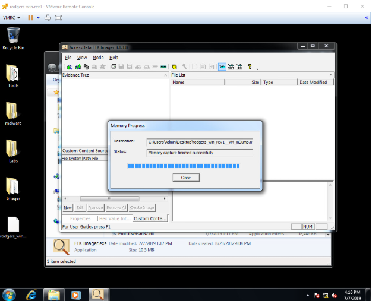
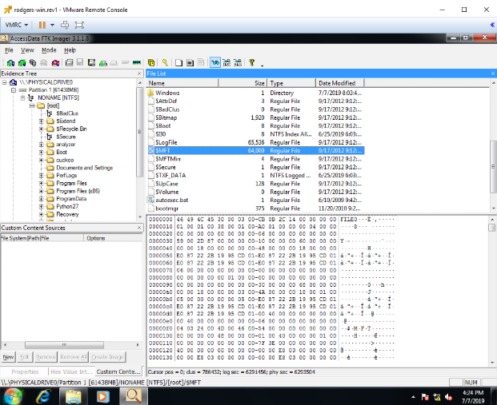
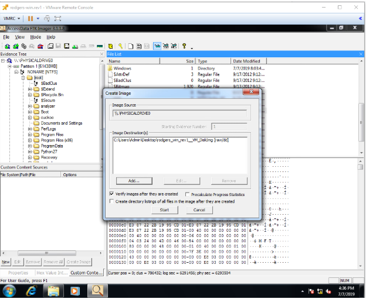
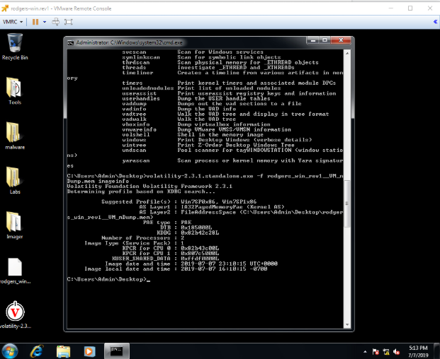
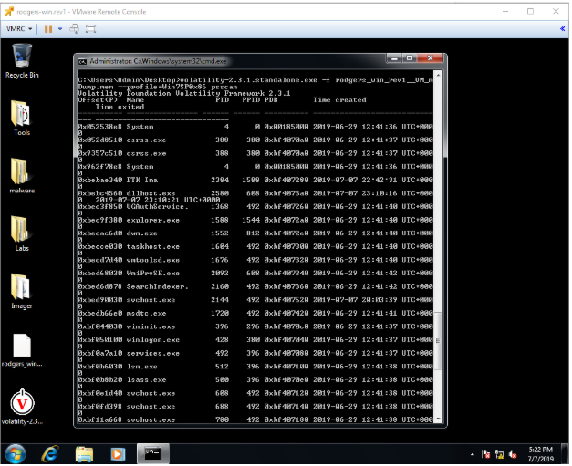
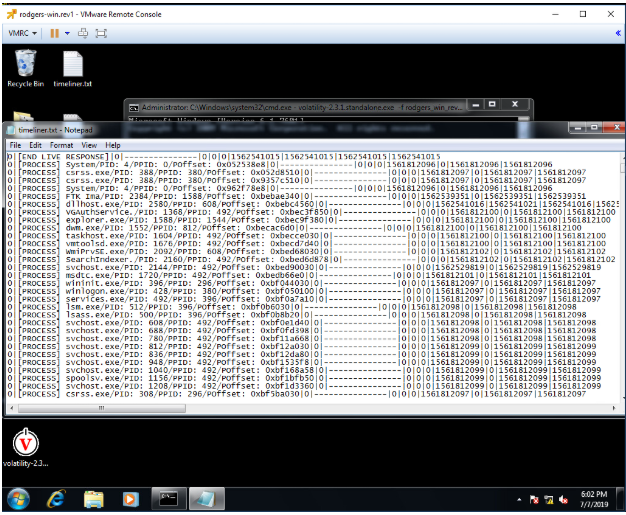

Incident Response is the term for using forensic methods/analysis to gather digital information or evidence of a crime. Forensic analysis uses many of the same tools and techniques used in the previous week to analyze malware, and while malware can be a component of a forensic analysis, it is not an inherent component. Examples of forensic analysis being used in cases without malware include IP theft, fraud, child exploitation, and more. Forensics involves 3 broad categories, “Live Forensics”, where a system is analyzed without being fully disconnected or “killed”, “Post-mortem” where the memory/disk(s) for the computer have been pulled (killing any running processes and possibly losing some data) to be analyzed later in a lab, and “Network Based”. From one (or generally multiple) of these steps, evidence is carefully gathered and meticulously preserved to create a timeline of events without contaminating the system. Finally, evidence is considered more or less “volatile” depending on the risk or data loss or contamination during the forensic analysis process. Live Forensics is critical to obtaining volatile data as a lot of valuable data is lost upon shutdown.
Key principles for forensics are minimising data lose (this can be done with a combination of live forensics and the use of well designed tools to gather information without adversely affecting the system being analyzed"), Recording everything (this can be done with tools but pen and paper recording for times and actions is still widely used and very useful), analyzing all data collected, and reporting the findings. Data needs to be gathered, analyzed, and reported carefully, as corrupted data can lead to everything becoming inadmissible in court. To tell the whole story and have an ideal timeline, it is necessary to gather as much data as possible from multiple different areas like the memory, hard drive, and the network traffic.
One important method for analyzing data is generating and parsing memory dumps. Memory dumps contain a lot of useful data including things hidden by an attacker, Usernames and Passwords, all running device drivers, and more. The memory dump can be generated with FTK Imager and then analyzed using Volatility and its host of plugins.
The FTK imager is a useful tool for copying data from a system for analysis, and this week we learned a few of its features in the lab that will be useful later. The tool allows us to easily do a Memory Dump (unfortunately FTK imager and all other tools will have some impact on the memory content, it is unavoidable), which would always be moved off system, but in this case (as it is a VM and a class setting) that is unnecessary:

Using “Add Evidence” to mount a physical drive (in this case we don't have one so we just use the VM’s drive as an example), allows us to get a quick view without tampering with evidence. It also lets us copy out certain useful files like the master table:

We can also capture a Disk Image, with the added built in options for encryption and have the checksum calculated before and after to verify the image, as before this should be saved off system, however in this case it was unnecessary:

Volatility is a tool provided to us, and demonstrated in lab, used for analyzing memory dumps like the one created previously with the FTK Imager. The command { volatility.exe -f [myMemDumpName] imageinfo } gathers basic information about memory dump, like the operating system version, hardware details, and the date/time the memory dump was created:
We can also run a process scan with the command { volatility.exe -f [myMemDumpName] --profile=Win7SP0x86 psscan } Giving a list of all running processes when the memory dump was created:

There other useful volatility commands we were introduced to like netscan which shows network activity, deskscan which shows activity on the desktop, getsids and to see which user rights a process was running (useful for malware).
Using volatility, we can create a timeline and parse the master table we were able to grab earlier using timeliner and mftparser (screencap is of the timeliner output file):

The final major topic was on data recovery, and using data carver tools like Photorec to search for specific signatures in the header/footer to carve out specific types of files.

This week was much more about hands on work with new tools as oposed to new concepts (relative to the previous week), with almost an hour less in lecture time, leaving a lot more time to get familiar with the tools. Overall I enjoyed the week more, with no pressing assignment and all of the initial issues with the VM's sorted out, I was able to focus more on the tools and their use. While the direction was a bit limited/unclear for this week, I opted to take the hands on aproach to the labs (shown above) as sugjested to ensure that I was familiar and comfortable with the tools.